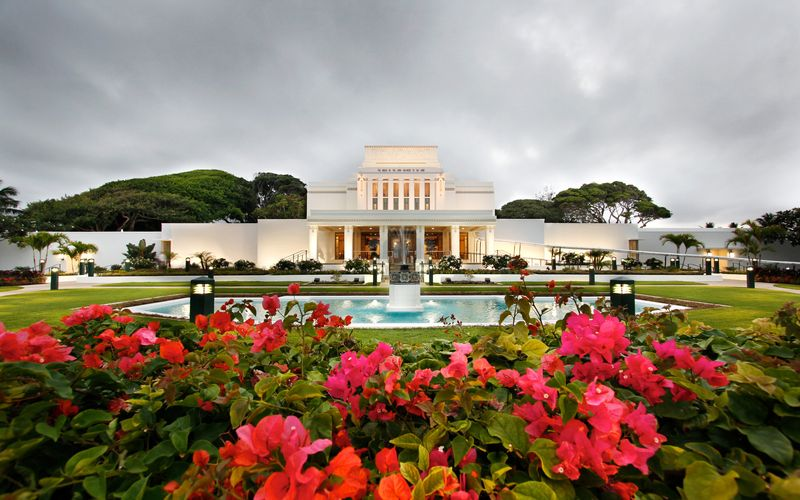

My Experience
As a convert, my temple experience was very meaningful to me. Before going to the temple, I wanted to have my family with me, but I could not go with them. While I was preparing, I missed my family and sometimes felt discouraged. When I arrived at the temple, I was nervous because I was away from home and did not know exactly what to expect. I also wondered if I was fully prepared and if I would feel welcomed.
When I entered the temple, the experience was different from what I had been worried about. The leaders and people there were very kind to me. They greeted me with smiles and made me feel comfortable. Their kindness helped me feel calmer and reminded me that I did not have to be afraid. They told me not to worry and encouraged me to come back as soon as possible and as often as I could. Their words made the temple feel like a place where I could continue learning and growing.
The Temple


These are my temple photo
hello everyoneWhat I Learned
This experience taught me that God loves me much more than I originally understood. I also learned that I am never truly alone, even when I am far away from my family or in an unfamiliar situation. People come from many different backgrounds and have different experiences, but kindness is still something that can bring people together. My first temple experience helped me feel closer to God and gave me a desire to return and continue building my faith.